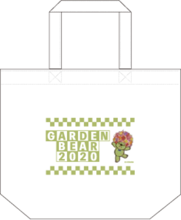
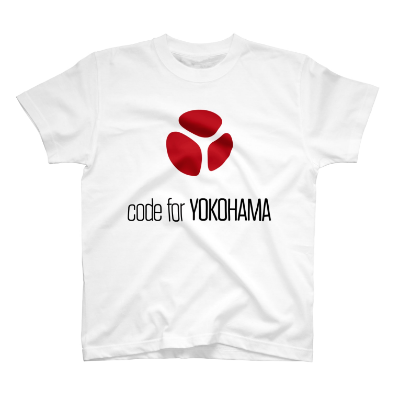

里山ガーデン・プロモーション映像 コンテスト開催！
応募受付終了しました。多数のご応募ありがとうございました！
審査の結果、授賞した各作品を紹介します。
花と緑を愛する人の心をつなぎ、自然環境を育む横浜市の取組「ガーデンネックレス横浜2020」のメイン会場のひとつである「里山ガーデンフェスタ」。
毎年、多くの人の目を楽しませ、心を癒すイベントとして親しまれていますが、今年は新型コロナウイルスの影響により延期となり、結果的に中止となることが決定されました。
地域課題をテクノロジーで解決するシビックテック団体である私たち"Code for YOKOHAMA"は、延期が決まった時からテクノロジーの力で「里山ガーデンフェスタ」に新たな市民参加の形を作れないかと考え、ガーデンネックレス横浜実行委員会様に本コンテストの開催を提案させていただきました。
新型コロナウイルス・COVID-19の1日も早い収束のため、外出を自粛している多くの皆様の心を、ぜひ私たちと一緒につないで、花と緑による癒しを広げていきましょう。
授賞作品
グランプリ
武重 誠一朗 さん
授賞者のコメント
この度は私の作品をグランプリに選んでくださり誠に光栄です。今回このようなコンクールに映像の作品を提出することは初めてでそこまで映像編集もやったことがなかったけれどこのコンテストがあることを調べて応募させていただき様々な刺激をもらいました。今度は里山ガーデンフェスタが開かれるとき、私のこの映像を見て行きたいなと少しでも思ってくださる方がいらっしゃれば幸いです。
DRONEBIRD賞
Noa さん
授賞者のコメント
この度は素敵な賞を頂き、ありがとうございます。里山ガーデンは春や秋にも訪れたことがあり、大好きな場所です。
今回、初めてプロの撮影するドローン映像を編集して、自分で撮った映像を編集するのとはまた違った楽しさがありました。
いつかまた里山ガーデンを訪れる機会を楽しみしています。
Code for YOKOHAMA賞
渡邊 大斗 さん
授賞者のコメント
コンテスト募集サイトにて偶然発見いたしました。初めはどのようなところかわかりませんでしたがYouTube、ホームページなどで調べとても自然に溢れていて良いところだと思いました。
コロナウイルスの影響でイベントが中止になり、楽しみにしていた方々に少しでもオンライン上で里山ガーデンさんに行った気分になれるような作品を作りたいと思い試行錯誤の上、プロモーション映像を制作させていただきました。
このコロナ禍で外出が思うようにできない方、また里山ガーデンをまだ知らない方に魅力を微力ではありますが、お伝えできたら幸いです。
受賞できると思っていなかったので大変嬉しく思っております。ありがとうございました。
観客賞
養田 恵美子 さん
授賞者のコメント
里山ガーデンを伝えたいと思った人が誰でも参加でき、自然の癒しを多くの方と映像で共有できる今回の企画を拝見し、ぜひ参加したいと感じました。
動画編集を始めたばかりでしたが、里山ガーデンの表情一つ一つを伝えられるよう心を込めて作成しました。SNS投稿も初心者の中、里山ガーデンの花や緑の癒しがたくさんの方の心に寄り添い、海外を含めTwitterやYouTubeで共感いただけたことを嬉しく思います。この企画をきっかけに、里山ガーデンに魅力を感じる人の輪がさらに広がっていくことを願っています。
プレゼンターからのコメント
ガーデンネックレス横浜実行委員会
皆様、力作をご応募くださいまして、ありがとうございました。今後ともこのような機会が持てればよいと考えておりますので、引き続きご支援、ご協力いただくとともに、是非、秋、開催予定の里山ガーデンフェスタにご来場いただきますようお願い申し上げます。
DRONEBIRD
谷戸や谷津田を代表とする、「里山」という言葉は、自然と人間が同じ空間を共有し、そのせめぎあいの中で成立するバッファーゾーンのような存在だと考えています。新型コロナというウイルスとのせめぎあいの中で、また先端技術の集大成とも言うべきドローンと自然環境とのせめぎあいの中で、多くの方々が里山ガーデンという空間を多様な視点で捉えたこの試みは企画側からみても大変刺激的で、関わった多くの方々にとって、発見の多かったものと想像します。このような機会をいただけた関係者の皆様に感謝するとともに、災害時に自然と人間がどのようにせめぎあい、乗り越えていけるのか、災害ドローン救援隊DRONEBIRDとしてもこの経験を基に、よりしなやかな社会の実現のために力を尽くしてまいります。
Code for YOKOHAMA
新型コロナウイルス感染症が及ぼす影響は生活の様々な面で暗い影を落としています。
しかし、このような時こそ花と緑による癒しを広げていきたいという私たちの願いに賛同いただき、多数のステキな作品を応募してくださったことに感謝します。
関わってくださった全ての皆様に感謝するとともに、新型コロナウイルスが早く収束し、今度は本物の里山ガーデンで皆様にお会いできることを楽しみにしています。
実施要項
募集作品
「里山ガーデン」の魅力を広く訴求できるプロモーション動画を募集します。
- 3分以内（エンドクレジットを含む）のオリジナル映像作品（応募者が権利を有していること）
- 素材はCode for YOKOHAMAのオープンデータを活用
- 募集開始日以降に完成した作品
賞
グランプリ
副賞として、「里山ガーデン」トートバッグ、ピンバッジ、表彰状を進呈
「里山ガーデンフェスタ」の公式プロモーション動画として市内各所で放映予定。
Code for YOKOHAMA賞
副賞として、「Code for YOKOHAMA」Tシャツ、表彰状を進呈
DRONEBIRD賞
副賞として、「DRONEBIRD」Tシャツ、ステッカー、表彰状を進呈
観客賞
副賞として、「ガーデンベア」ピンバッジ、表彰状を進呈
グランプリ作品の扱い
次回の「里山ガーデンフェスタ」の公式プロモーション動画として、公式Webサイト上で公開、および横浜市内各所で放映予定です。
選考方法及び結果発表
- 予備（形式）審査
- 応募作品について主催者が合議・選定します。
- 本審査
- コンテスト募集期間中及び募集終了後1ヶ月以内に、随時実施者で合議の上、選定します。観客賞については、応募作品につけられた「いいね！(Like!)」の数を参考にしつつ、実施者が合議・選定します。
- 結果発表
- コンテスト公式サイトで発表するとともに、グランプリ授賞者に対しては後日表彰します。
募集期間
応募受付終了しました。多数のご応募ありがとうございました！
審査結果は後日発表いたします。
実施団体
- 主催：Code for YOKOHAMA
- 共催：ガーデンネックレス横浜実行委員会
- 後援：横浜市経済局（I･TOP横浜）
- 協力：DRONEBIRD
応募方法
1. 映像作品を作りましょう
里山ガーデンの魅力を詰め込んだプロモーション動画を作成してください！
なお、Code for YOKOHAMAやDRONEBIRDが、オープンデータ※1として公開した映像や写真素材を自由に使うことができます。
エンドクレジット含めて3分以内に収めるようにしましょう。
※1 目的を問わない自由な二次利用が可能なデータを指します。
※動画素材は各YouTube動画にダウンロードURLを記載してあります。
2. ハッシュタグをつけてTwitterに投稿
「#satoyama_garden」のハッシュタグとともに、ツイッター(Twitter)やFacebook等のSNSに、投稿した旨をエントリしましょう。
Code for YOKOHAMAでもみなさんの作品を随時SNS等で発信していきます。
3. 応募フォームからエントリー
動画のURLや連絡先を入力してエントリーします。
エントリーするまえに応募要項をご一読ください。
応募受付終了しました。多数のご応募ありがとうございました！
応募要項
応募作品の著作権設定
応募者は、応募作品をYouTubeに投稿する際に、クリエイティブ・コモンズ・ライセンス表示4.0(CC BY 4.0)を付与※2することとします。 また、使用した素材の出典表示を説明欄に記載してください。(CC BY 4.0 DRONEBIRD もしくは CC BY 4.0 Code for YOKOHAMA)
※2 「クリエイティブ・コモンズ・ライセンス(CCライセンス)」とは、作品を公開する作者が「この条件を守れば私の作品を自由に使って構いません。」という意思表示をするための権利表記方法です。CCライセンスを利用することで、作者は著作権を保持したまま作品を自由に流通させることができ、受け手はライセンス条件の範囲内で再配布やリミックスなどをすることができます。今回提供される全ての素材にもCCライセンスが付与されています。
応募資格
- 個人、グループ、法人を問わず、どなたでも応募可能です。
- 国籍、年齢、居住地等の制限はありません。ただし、未成年の方が応募する場合は、保護者の許可を得てください。
- ひとりの応募者(グループ、法人を含む)で、複数の作品の応募が可能です。また、応募者は、複数のグループに所属することが可能です。
- 本コンテストの審査に関わる方は、本コンテストに応募することは可能ですが、受賞対象とはなりません。
- その他、応募資格の詳細は、応募条件をご参照ください。
応募条件
- 応募者は、主催者が公開する素材を必ず利用することとします。
- 応募作品は、コンテスト実施期間中、誰でも無償で利用できる状態で公開することとします。
- 応募作品は、応募者が考案・制作したものに限ります。
- 応募者は、本コンテストへの応募に支障がないように、応募作品の著作権についてあらかじめ権利処理したことを、主催者、共催者、後援者、協力者(以下、これらを総称して「実施主体」といいます。)に対して保証するものとします。
- 応募作品は、著作権上の問題を生じさせることのない他の映像作品と素材とを組み合わせることを可能とします。
- 応募者は、応募作品の制作にかかる諸経費(動画編集用ツール、インターネット通信料・接続費など)は、応募者が負担することを承諾するものとします。
- 万が一、著作権、著作者人格権、著作隣接権、意匠権、商標権、実用新案権、特許権その他の権利(以下、「知的財産権等」といいます。)に関わる問題が発生した場合は、応募者の責任及び費用負担で解決するものとします。また、実施主体又は実施主体以外の第三者が、応募者の責任により損害を被った場合は、当該応募者が損害賠償責任を負うものとします。
- 本コンテストの実施主体の事情により、本コンテストのために用意した素材の提供を中止したり、素材の内容を変更したりすることがあることを、応募者はあらかじめ承諾するものとします。
- 公序良俗に反する、または反するおそれのある応募作品および、本コンテストの趣旨に合わない応募作品であると主催者が判断したものは審査対象外とします。
- 応募作品の知的財産権等は、応募者に帰属します。
- 応募者は、実施主体または実施主体が指定する者が、本コンテストの告知、宣伝、記録及び広報等の目的で、当該開発者による応募作品、名称、開発者名などを無償かつ無期限に、公開、複製、配布、公衆送信または出版(電子的方法によるものを含みます。)その他の方法により利用することを許諾するものとします。
- 応募者は、本コンテストに応募作品を応募した旨を、自己のwebサイトやSNS等で紹介することができます。
- 応募者の応募内容に虚偽の記載があった場合は、受賞の資格はなくなります。
- 連絡がとれない等の理由で応募者に受賞をお伝えできない場合には、当該開発者の受賞権利が無効になることがあります。
- 応募時に記載いただいたお名前やご連絡先等の情報は、受賞時のご連絡、受賞された応募作品の発表時、及び応募作品に関連するご連絡にのみ利用させていただきます。ただし、今後、当該応募作品、名称、応募者名などを国内外で広報、宣伝、告知のため紙媒体及び電子媒体等で使用する場合は、この限りではありません。
- 本コンテストの選考の経過等に関するお問い合わせには応じられません。
- 諸事情により本コンテストを予告なく中止する場合があります。また中止した場合、応募者が本コンテストの中止を知るまでに本コンテストへの応募のために拠出した費用があったとしても、実施主体は当該拠出費用を補償する義務はないものとします。
問い合わせ先
Code for YOKOHAMA
info@code4.yokohama